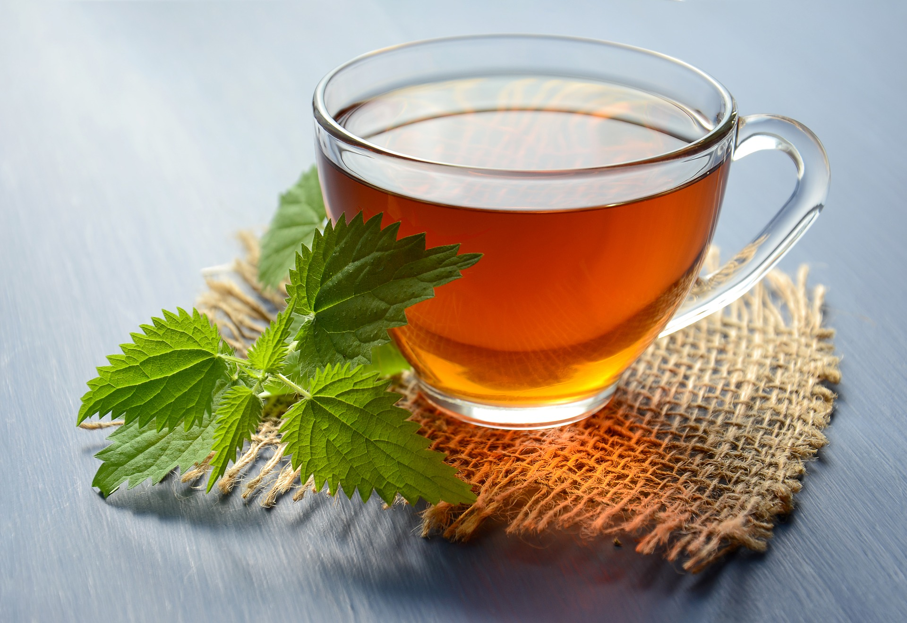

SVE ŠTO TREBATE ZNATI O ČAJU

Čaj od koprive-ljekoviti napitak koji čuva zdravlje
Čaj je biljka latinskog naziva Camellia sinensis od čijeg se lišća i drugih dijelova spravlja vrući aromatični napitak blago gorkog i oporog mirisa koji se također naziva čaj.